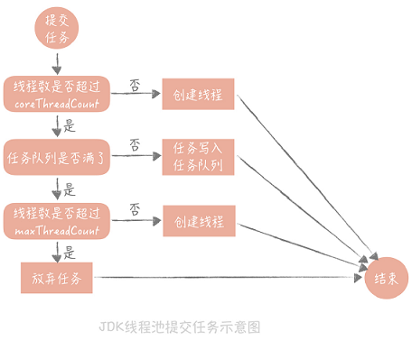

目录 #
连接池优化 #
分类 #
- 数据库连接池
- redis连接池
- http连接池
数据库连接池 #
- 最小连接数， 最大连接数 建议最小连接数控制在 10 左右，最大连接数控制在 20～30 左右
- 连接的可用性
使用连接发送**“select 1”**的命令给数据库看是否会抛出异常，如果抛出异常则将这个连接从连接池中移除，并且尝试关闭.
线程池 #
JDK线程池 #
重要参数： coreThreadCount 和 maxThreadCount，

[chat] 当大量请求进入线程池时，ThreadPoolExecutor 会根据其内部的线程池参数来处理请求。具体来说，当请求进入线程池时，ThreadPoolExecutor 会首先尝试将请求放入工作队列中，如果工作队列已满，则会根据线程池的配置来执行饱和策略，例如抛出异常、直接拒绝请求、阻塞等待或调用调用者运行等待任务。
- 线程池中的线程会根据核心线程数和最大线程数的设置进行扩缩容。
- 当有新的任务提交到线程池时，如果当前线程数小于核心线程数，线程池会创建新的线程来处理该任务。
- 如果当前线程数已经达到核心线程数，线程池会将任务放入工作队列中，如果工作队列已满，则线程池会创建新的线程来处理该任务，直到达到最大线程数为止。
- 当线程池中的线程数量超过核心线程数时，空闲的线程会根据线程空闲时间的超时时间来自动销毁，以保证线程池中的线程数量不会无限制增长。
需要注意的是，在ThreadPoolExecutor中，线程池的线程数应该设置为适当的值，如果设置过小，则可能会导致线程饱和，影响任务的处理效率；如果设置过大，则会浪费系统资源，同时可能会导致线程竞争和锁的争用，影响系统的性能。因此，在使用ThreadPoolExecutor时，需要根据系统的负载和任务特性来合理地设置线程池的参数，以达到最佳的性能和效率。 [/chat]
Tomcat线程池 #
Tomcat 使用的线程池就不是 JDK 原生的线程池，而是做了一些改造，当线程数超过 coreThreadCount 之后会优先创建线程，直到线程数到达maxThreadCount，这样就比较适合于 Web 系统大量 IO 操作的场景了。
最佳实践 #
大量的任务堆积会占用大量的内存空间，一旦内存空间被占满就会频繁地触发 Full GC，造成服务不可用，我之前排查过的一次 GC 引起的宕机，起因就是系统中的一个线程池使用了无界队列.
对象池 #
Netty 对象池 [1][2] #
netty为了避免过多的创建对象和频繁的gc使用了对象池，在需要创建ByteBuf的时候，从对象池中找，如果没有才会去创建一个新的ByteBuf。
Tomcat中的对象池 [3] #
Tomcat 和 Jetty 都用到了对象池技术，这是因为处理一次 HTTP 请求的时间比较短，但是 这个过程中又需要创建大量复杂对象。